커피성경은 커뮤니티 피플을 위한 성경이에요. 가지고 있는 성경·주석·원어 사전을 한곳에 모아, 여러 번역을 나란히 보고 원어까지 함께 묵상할 수 있게 만들었습니다.
기획
이성진 목사
개발
노나연
로고 디자인
차주은
커피성경이 말씀 묵상에 도움이 되셨다면, 커피 한 잔 사주세요!
무료 배포 버전으로, 일부 오류가 있을 수 있습니다. 배포 2026-10-22 14:23
커피성경 사용설명서
시작하기
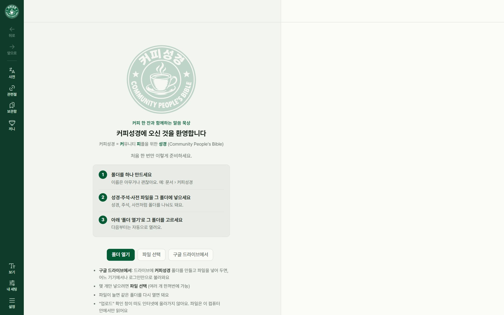
처음 화면: 폴더 열기 · 파일 선택 · 구글 드라이브에서
커피성경은 가지고 있는 성경·주석·원어 사전 파일을 브라우저에서 읽어 보여 주는 성경 앱이에요. 파일은 이 기기 안에만 보관되고, 한 번 넣으면 다음부터 자동으로 열려요.
폴더 열기: 성경·주석·사전 파일을 모아 둔 폴더를 고르면 한 번에 들어와요. 폴더 안을 성경·주석·사전으로 나눠도 돼요.
파일 선택: 몇 개만 넣을 때 써요. 여러 개를 한꺼번에 고를 수 있어요.
구글 드라이브에서: 드라이브에 커피성경 폴더를 만들고 파일을 넣어 두면, 어느 기기에서나 로그인만으로 불러와요. (아래 구글 드라이브)
넣을 수 있는 파일은 설정 › 지원하는 파일 형식에서 볼 수 있어요. theWord(.ont .ot .nt .cmt.twm .gbk.twm .dct.twm), MySword(.bbl.mybible), 베들레헴(.bdb .dct .sdb)을 읽어요. 암호화된 파일(.ontx 등)은 열 수 없어요.
앱으로 설치(설정 › 도움말)를 하면 바탕화면·홈 화면 아이콘으로 열리고, 인터넷이 없어도 열려요.
화면 구성
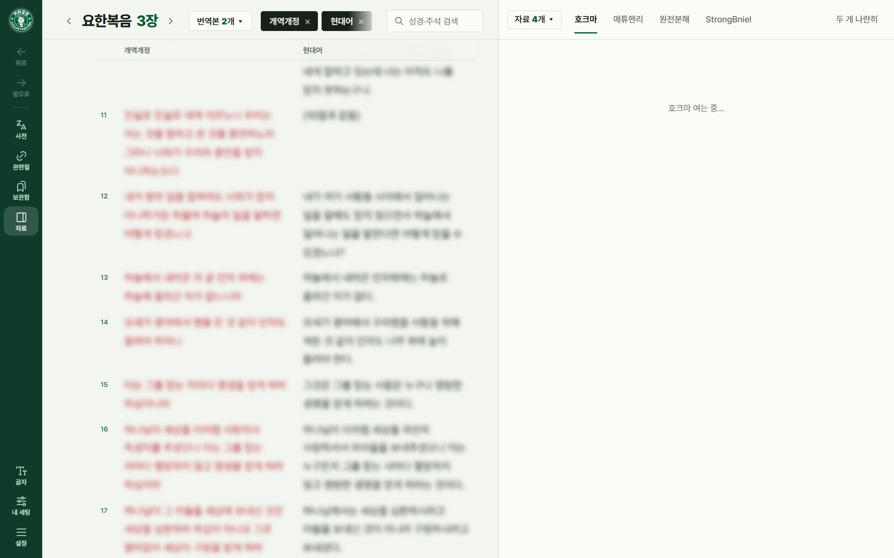
PC: 왼쪽 막대 · 성경 칸 · 자료 칸
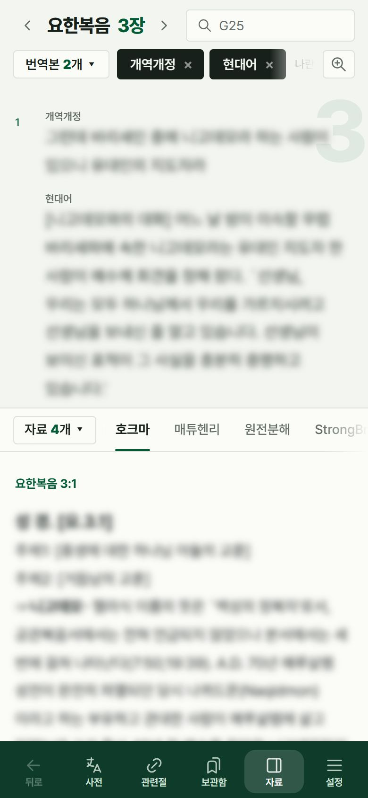
모바일: 위 성경 칸 · 아래 자료 칸 · 아래 막대
성경 칸: 위에 책·장 제목, 번역본 ▾와 고른 번역본, 검색창이 있고 아래에 본문이 나와요.
자료 칸(PC는 오른쪽, 모바일은 아래): 주석·원전분해·원어 사전·관련 구절·보관함을 탭으로 봐요.
PC 왼쪽 막대: 뒤로 · 앞으로 · 사전 · 관련절 · 보관함 · 자료 · 글자 · 내 세팅 · 설정. 맨 위 로고를 누르면 커피성경 소개가 나와요.
모바일 아래 막대: 뒤로 · 사전 · 관련절 · 보관함 · 자료 · 설정. 글자 크기·글꼴과 내 세팅은 설정 맨 위에 있어요. 성경 칸 위의 돋보기 아이콘으로 글자를 크게 볼 수 있어요.
자료 버튼은 자료 칸을 열고 닫아요. 닫으면 성경을 넓게 봐요.
성경 읽기 · 이동
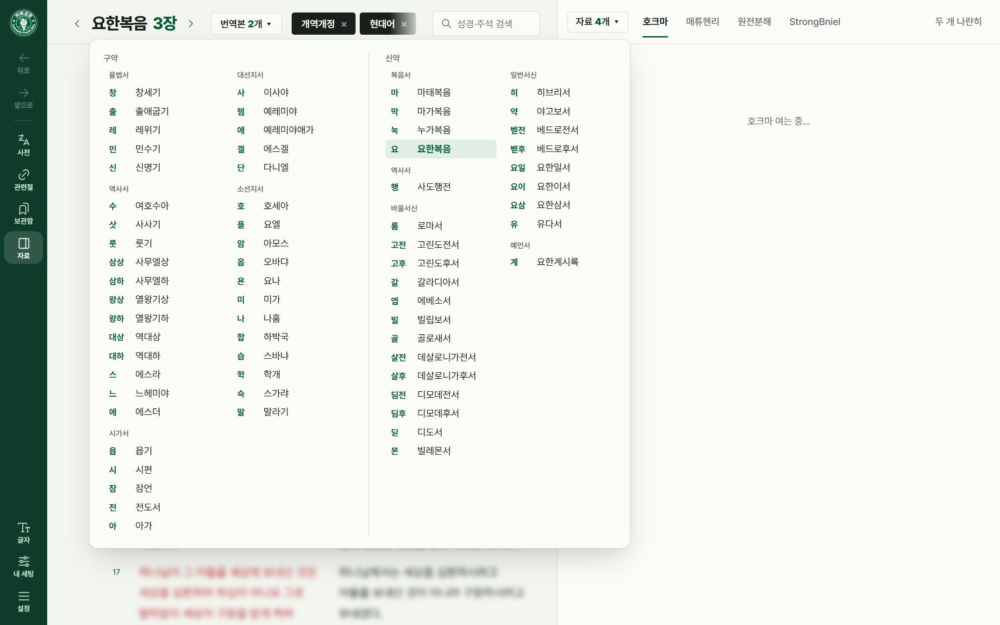
PC 성경 찾기: 구약 | 신약, 묶음별 목록
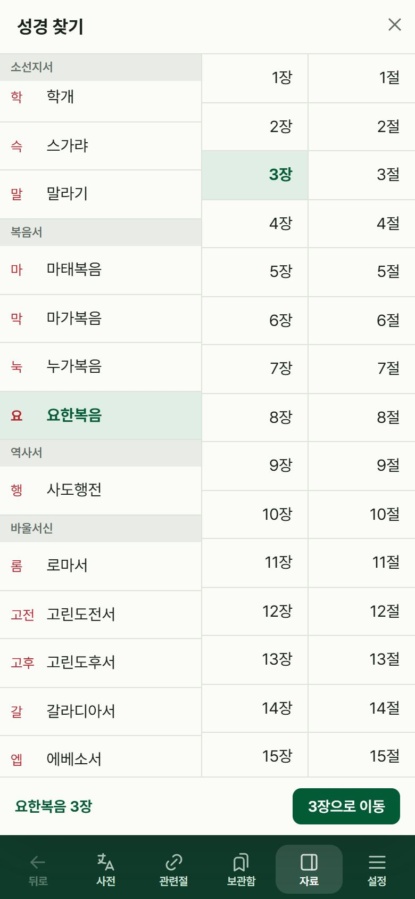
모바일 성경 찾기: 책 | 장 | 절
책 이름을 누르면 책 목록(줄임말과 이름), 장을 누르면 그 책의 장 목록이 나와요. 다른 책을 고르면 제목이 먼저 바뀌고, 장을 고르면 이동해요.
모바일은 화면 전체에 책 | 장 | 절 세 칸이 나와요. 장을 고른 뒤 ○장으로 이동을 누르거나 절을 바로 누르면 돼요.
제목 양옆 ‹ › 또는 키보드 ←→로 앞뒤 장, ↑↓로 앞뒤 절로 움직여요.
링크나 검색으로 건너뛴 뒤에는 뒤로 · 앞으로(Alt+← / →)로 돌아가요.
주석 속 성경 구절에 마우스를 올리면 본문을 미리 볼 수 있어요.
끼니 버튼을 누르면 공동체가 함께 묵상하는 오늘의 끼니 창이 떠요. 그날의 묵상·통독을 누르면 그 구절로 가고, ‹ ›로 다른 날을 볼 수 있어요.
번역본 대조
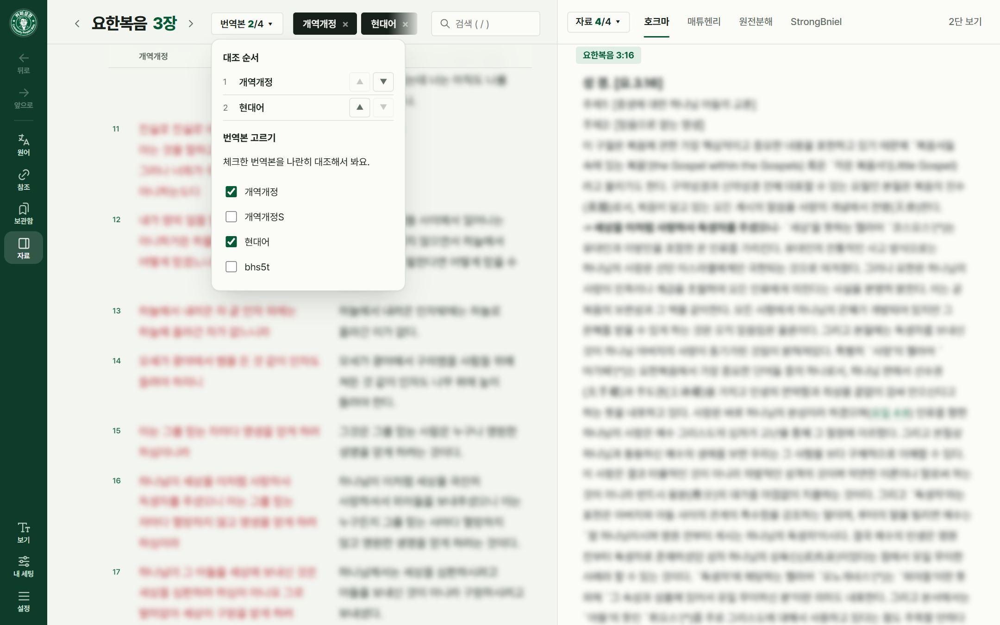
번역본 N개 ▾: 위는 대조 순서(▲▼), 아래는 번역본 고르기
번역본 N개 ▾를 눌러 보고 싶은 번역본을 체크하면 나란히 대조해요. 목록은 가나다순이에요.
같은 창 맨 위 대조 순서에서 줄을 끌어서 옮기거나 ▲▼로 칸 순서를 바꿔요. PC에서는 위쪽 번역본 이름을 끌어서 옮겨도 돼요.
번역본 이름 옆 ×를 누르면 대조에서 빠져요. 이름을 누르면 목록에는 둔 채로 칸만 잠깐 끄고 켤 수 있어요(끈 것은 점선 테두리).
모바일은 3개까지 대조하고, 절마다 번역본을 위아래로 한 줄씩 보여 줘요.
스트롱 번호가 붙은 한국어 성경(베들레헴 개역개정S 등)은 일반 개역개정을 함께 넣어 두면 띄어쓰기를 개역개정에 맞춰 보여 줘요.
절 고르기 · 하이라이트 · 메모 · 책갈피
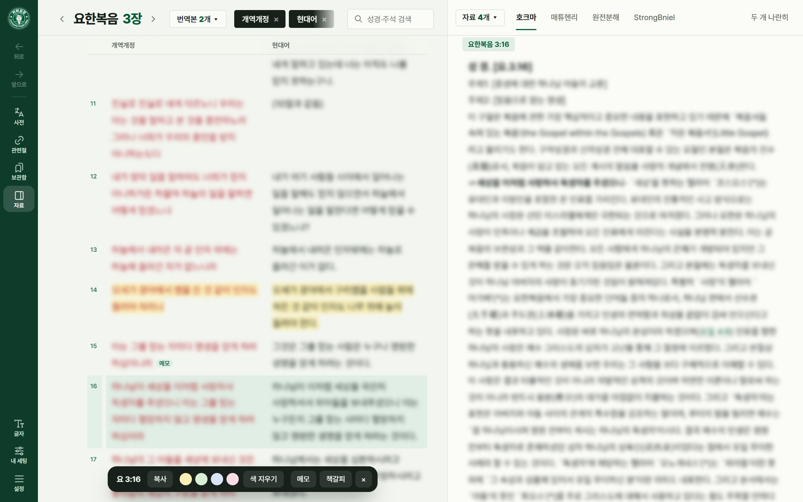
절을 고르면 아래에 작업 막대 (복사 · 하이라이트 · 메모 · 책갈피)
절을 누르면 선택돼요. 하이라이트를 없애려면 색 지우기. Shift+누르기로 범위, Ctrl(맥은 ⌘)+누르기로 여러 절을 고를 수 있어요.
선택하면 나오는 막대에서 복사(Ctrl+C), 하이라이트(노랑·초록·파랑·분홍, 지우기), 메모, 책갈피를 해요.
하이라이트는 글자 줄마다 형광펜처럼 칠해지고, 메모가 있는 절에는 메모 표시가 붙어요.
모아 보기는 보관함에서 해요. 책갈피·메모·하이라이트를 누르면 그 절로 가요.
자료 칸 (주석 · 원전분해 · 사전 · 관련 구절 · 보관함)
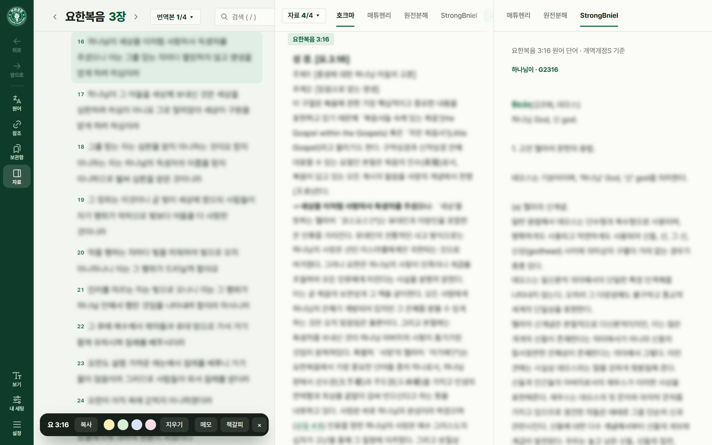
두 개 나란히: 가운데 주석, 오른쪽은 고른 절의 원어 단어 사전 풀이
주석: 고른 절의 주석으로 저절로 따라가요.
원전분해(베들레헴 .sdb): 절마다 원어 단어·기본형·문법·뜻을 보여 줘요. 번호를 누르면 단어 노트가 열려요.
원어 사전: 번호(H430, G26)나 한글 단어로 찾고, 히브리어·헬라어 전체 목록도 볼 수 있어요.
관련 구절·보관함은 막대의 관련절·보관함 버튼으로 열어요. 한 번 더 누르면 주석으로 돌아와요.
탭 줄 맨 앞 자료 N개 ▾에서 탭 줄에 보일 주석·사전을 골라요. 탭을 끌어서 순서도 바꿀 수 있어요(주석·사전 섞어서).
두 개 나란히: 자료 칸을 둘로 나눠 비교해요. 오른쪽 칸에서 사전을 고르면 고른 절의 원어 단어마다 사전 풀이가 나와요.
원어 단어 · 단어 노트
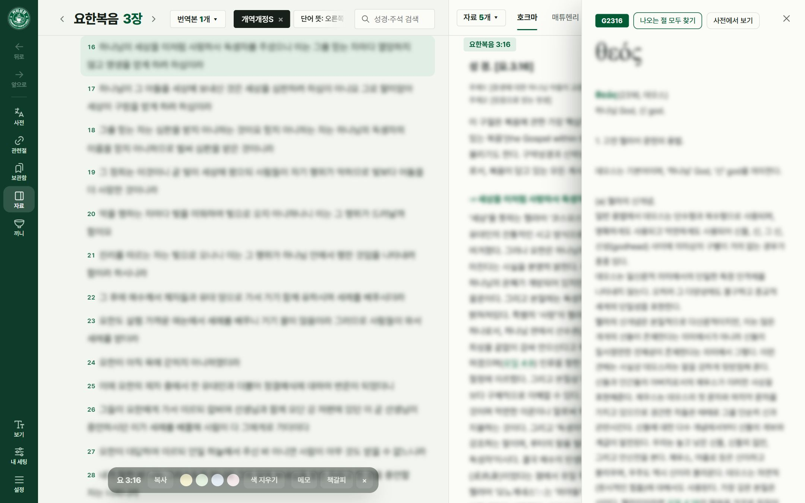
단어 노트: 번호 · 나오는 절 모두 찾기 · 사전에서 보기
원어 성경(BHS, 원어 신약 등)이나 스트롱 번호가 붙은 성경(개역개정S 등)의 단어를 누르면 단어 노트가 열려요.
단어 노트 맨 위: 번호(마우스를 올리면 설명) · 나오는 절 모두 찾기 · 사전에서 보기. 아래에 사전 풀이와 이 단어가 나오는 곳이 있어요.
번역본 줄의 단어 뜻 목록에서 보는 곳을 골라요 — 오른쪽 창(모바일은 아래에서 올라옴) · 단어 바로 아래(작은 창) · 자료 칸 사전. 기존 디자인은 단어 옆 창 · 자료 칸 사전.
BHS 형식 성경은 발음·뜻 보기로 원어 아래 발음과 기본형 뜻을 켜고 끌 수 있어요.
검색
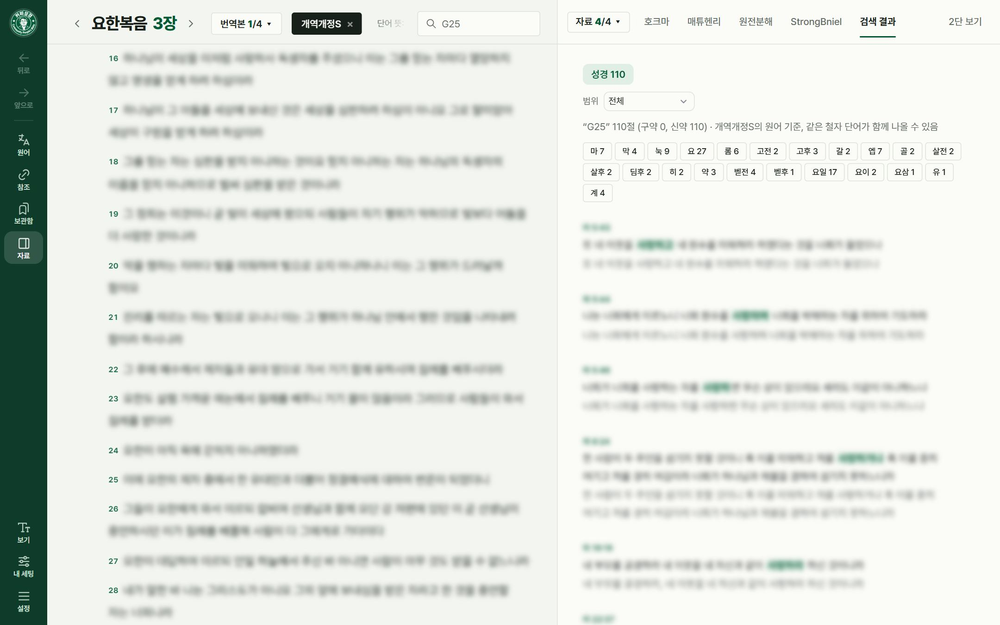
원어 번호(G25) 검색 결과
성경·주석 검색 칸(키보드 / 키로 바로)에 적고 Enter.
여러 단어는 모두 들어 있는 절, "따옴표"는 붙은 그대로 찾아요.
H430, G26처럼 원어 번호로 찾으면 그 번호가 붙은 단어를 강조해요. 원어 번호가 파일에 들어 있는 원전분해, 개역개정S, TRa+I 중에서 기준을 고르고(처음 한 번은 원전분해를 정리하느라 몇 초 걸려요), 결과의 위 줄은 기준, 아래 줄은 짝(원전분해 ↔ 개역개정S)이에요. 두 파일은 사람이 직접 번호를 붙여서 같은 단어에 번호가 다르거나 틀린 곳이 있으니(예: 삼하 19:5 원전분해 H3001 / 개역개정S H954) 참고용으로 보세요. 결과 위에는 그 번호가 나오는 절 수와 나오는 단어 수가 함께 나와요(한 절에 두 번 나오면 절은 1개, 단어는 2번).
결과에서 번역본과 범위(전체·구약·신약·현재 책)를 바꿀 수 있고, 주석에서도 찾아요(여러 주석을 한꺼번에).
보기 · 내 세팅 · 화면 설정
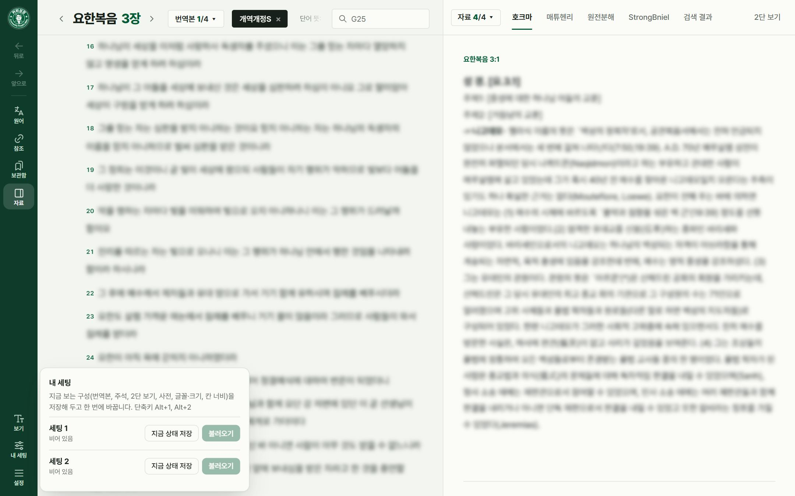
내 세팅 1 · 2
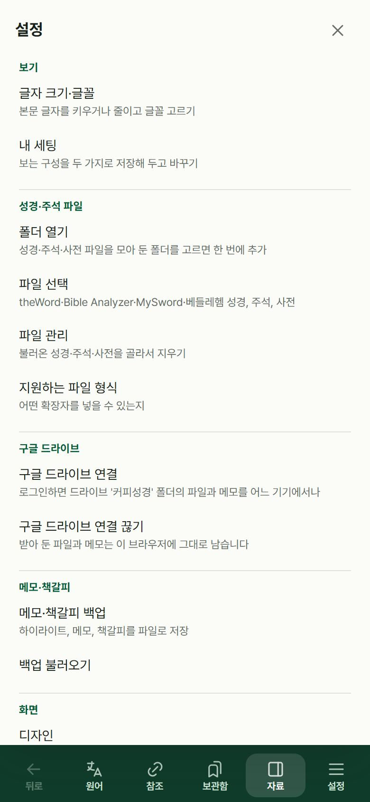
모바일 설정: 맨 위 보기 묶음
글자: 글자 크기와 글꼴(기본 프리텐다드). 모바일은 설정 맨 위.
돋보기(모바일): 본문 글자를 한 번에 크게. 다시 누르면 원래대로.
내 세팅: 지금 보는 구성(번역본·주석·두 개 나란히·사전·글꼴·칸 너비)을 1·2에 저장하고 한 번에 바꿔요(Alt+1, Alt+2). 구글 드라이브를 연결하면 다른 기기와도 맞춰져요.
설정 › 화면: 디자인(새 디자인 / 기존 디자인), 색(초록·파랑·검정), 배경 화면(커피 사진·내 사진, 진하기·흐림·맞춤).
PC에서 칸 사이 경계를 끌면 너비를 조절해요(두 번 누르면 원래대로).
구글 드라이브로 여러 기기에서
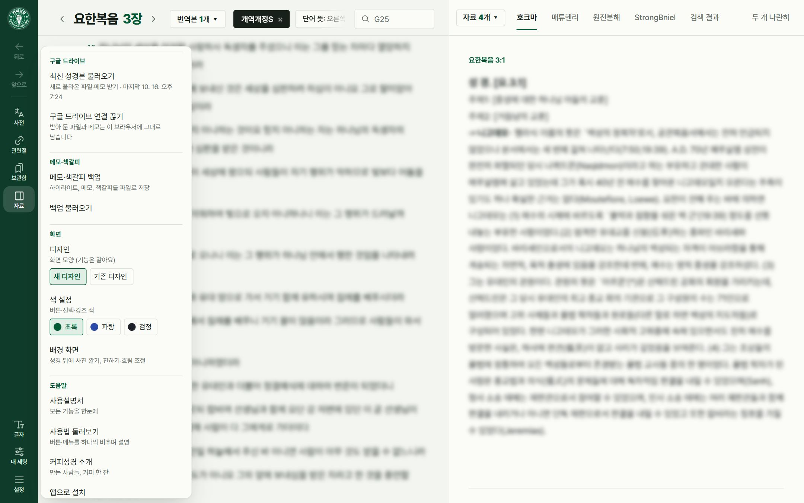
설정 › 구글 드라이브: 최신 성경본 불러오기 · 연결 끊기
구글 드라이브에 커피성경 폴더(띄어쓰기 없이)를 만들고 파일을 넣어요. 하위 폴더도 괜찮아요.
설정 › 구글 드라이브 연결(또는 첫 화면 구글 드라이브에서)을 누르고 로그인해요. 드라이브 권한은 모두 체크해 주세요.
폴더의 파일을 받아 오고, 메모·책갈피·하이라이트·내 세팅이 기기끼리 맞춰져요.
'커피성경' 안의 참고 폴더에 둔 파일은 자동으로 받지 않아요. 설정 › 파일 관리의 '참고' 폴더 목록에서 필요한 것만 받기로 받아요.
최신 성경본 불러오기를 누르면 이 기기를 드라이브 '커피성경' 폴더와 똑같이 맞춰요. 새 파일·고친 파일은 받고, 이 기기에서 지운 파일도 다시 받고, 드라이브에서 지운 파일은 이 기기에서도 지워요. 직접 추가한 파일과 메모·책갈피는 그대로예요.
로그인은 1시간 유지돼요. 그동안은 앱을 켤 때·메모를 고칠 때 저절로 맞추고, 그 뒤에는 최신 성경본 불러오기를 한 번 눌러 주세요. 받아 둔 파일과 메모는 로그인 없이도 열려요.
함께 사는 가족에게는 커피성경 폴더를 공유해 같이 쓸 수 있어요. 메모는 계정마다 따로예요.
구글 드라이브 연결 끊기를 해도 받아 둔 파일과 메모는 이 기기에 남아요.
파일 관리 · 백업
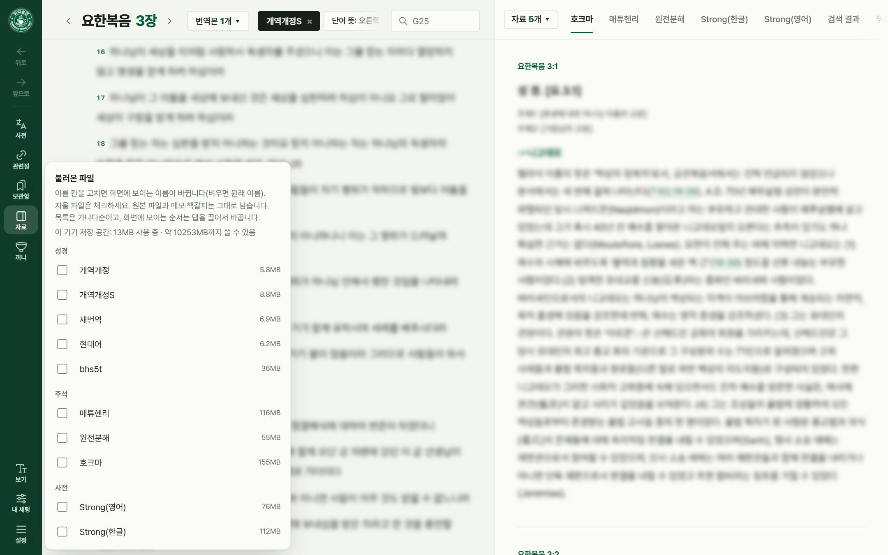
설정 › 파일 관리
설정 › 파일 관리: 보이는 이름 바꾸기, 골라서 지우기, 이 기기 저장 공간 보기. 드라이브에서 받은 파일을 지우면 앱을 켤 때 저절로 다시 받지는 않아요. 드라이브에만 있는 파일에서 하나씩 받거나 최신 성경본 불러오기로 모두 다시 받아요. 이 기기에서 계속 안 쓸 파일은 드라이브의 참고 폴더로 옮겨 두세요.